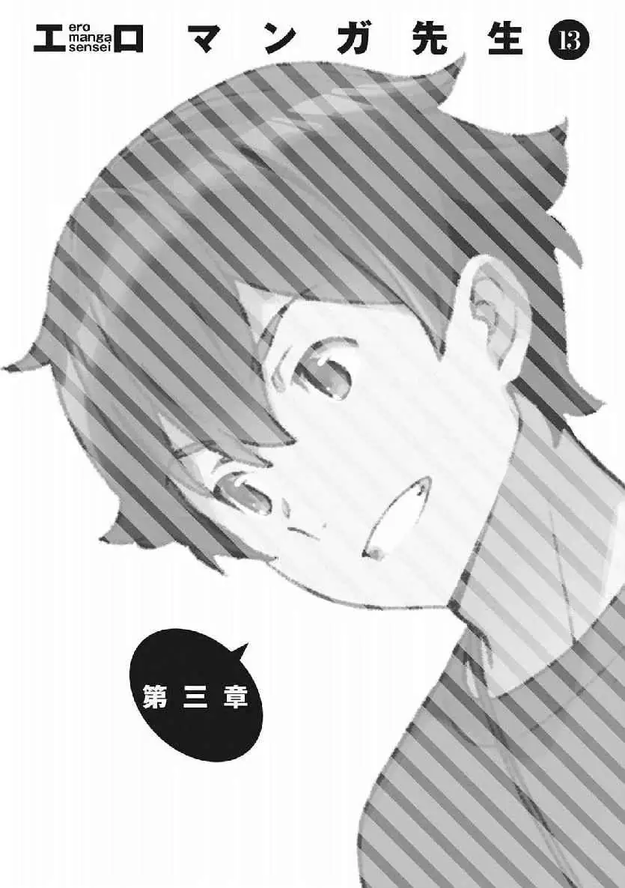
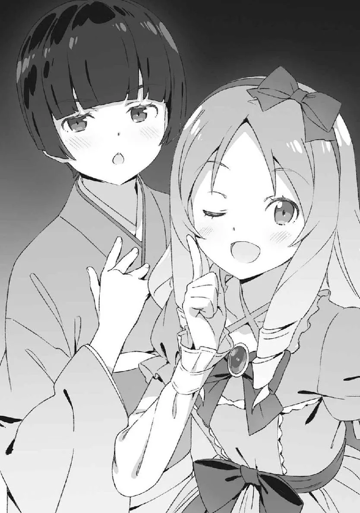
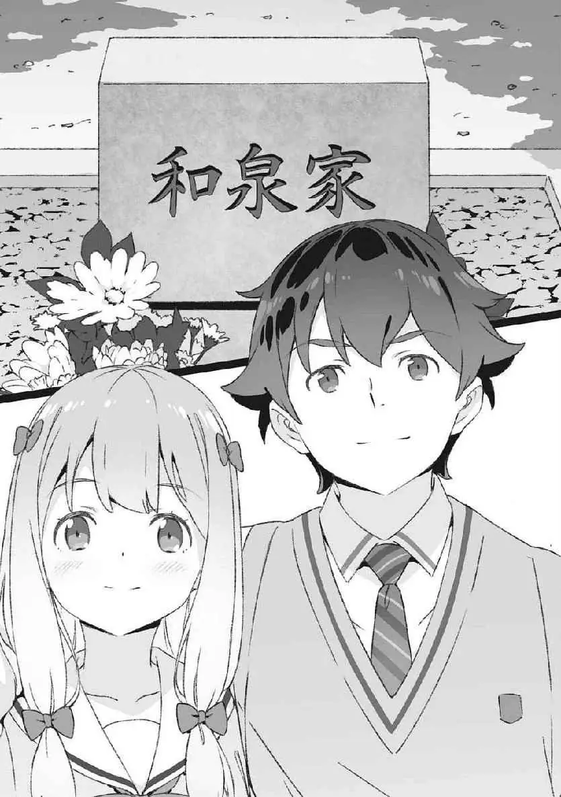

第三章
伴随着轻快的歌声，动画片《世界上最可爱的妹妹》第一话结束了。
电视画面刚一切换到广告，我和纱雾就同时坐在沙发上向后翻了个身。
「啊，哇～～～～～～～～～～～～～～～～～。」
「结束了……哎～～～～～～～～～～～～～～～～～。」
全身瘫软无力。两人的额头都渗出了汗珠。呼吸急促，心脏难受。
只有牵在一起的手传来的温暖，令人心安。
喉咙干渴得不得了，想喝水。好不容易准备的蛋糕，也完全不想吃。我用沙哑的声音问身旁的搭档。
「我说……感觉怎么样？」
「不知道……应该很有趣！」
「对吧！我超开心，也很兴奋——可是不知道有不有趣耶！」
半抱着自暴自弃的情绪大叫。
要是被和泉政宗的粉丝知道了，他们可能会幻灭吧。
应该很有趣！
这是刚看完动画第一话，身为原作者的心声。
画面和声音，在制作过程中都检查了无数遍……这是我们讨论了很多次「怎么改会更好呢」，才做出来的第一集。
「我有自信……我有自信！」
为了监修，把制作过程中的影像一遍又一遍地看——至少看了五十遍以上。
原作者和插画家没法以普通观众的视角去欣赏。
甚至让我多少有些厌倦了。
就说第一集吧。
因为！就在前几天——真的，就在前几天！
我们才一边反复播放几乎完成的影像，一边讨论BGM的种类和播放时机！台词也全都记得！
关于《世界上最可爱的妹妹》这部动画，我们可是世界上最了解的。精彩场面、幕后设定，甚至原作的后续发展，我都了如指掌。
不可能和第一次看的观众有同样的心态。
如果这是作为创作者的不成熟，我甘愿接受。
「哇……是那个……怎么、怎么……和平时一样！」
自己的新书，在发售日自己读时的心情。
一遍又一遍修改，一遍又一遍重读，一遍又一遍讨论，面对反复打磨的自信之作——
「喔喔！自己看也看不出个所以然来！反正一定很有趣，一定！」
变成这样的感觉。
那种苦闷、痛苦、提心吊胆的心情。
「嘎吱嘎吱……说不定雨宫导演和真希奈现在也变成这样了呢。」
「哥哥，《世界妹》第一集，观众的感想是什么？」
「不要把自搜的结果告诉我——！」
我抱头扭动着身体。
「找个能让我分心的话题吧！」
纱雾慌张地答应了我的要求。
「那我们换个话题……同一时间播出的其他动画的原作者的推特是这个样子的。」
「啊？我看看。」
哇啊啊啊啊啊啊～～～～！精彩的第一话，作为原作者非常感动~ ~ ！
每个角色都可爱又帅气～～～～～！
每一个场景都被描绘得很仔细～～～～～！
在电视机前尖叫个不停！吓死我了～～～～～～～～～！
——啊，现在我开始解说第一话吧♪
「哈哈，骗谁啊。这家伙发推特的时候肯定一脸严肃。」
「为什么这么说？ ！」
「这个原作者，推特上发的基本都和动画有关系，如果是真的，看了第一话应该不会这么吃惊吧。」
因为他和我的立场很接近。
「这个时候，怎么可能有正面意义上的惊喜呢？」
也许会有负面的惊喜倒是。
——原作者啊，抱歉吓到你了，没来得及做OP的动画。
之类的。
——之前说要修改的那个，果然办不到。就这样直接播放吧！
好像。还有更危险的例子，我就不一一举了。
「如果这位原作者真的很惊讶的话，应该会有『竟然有这种安排吗——』那样的反应。」
「可是，和泉老师这一年来是不是变得心灵肮脏了？……也许人家真的很感动，也很惊讶呢！」
「他大概是因为工作关系才发这些推特的吧。是事先让相关人员检查过推特内容的。」
最近，对原作者的口诛笔伐也成了一种风险。
纱雾绷着脸说:
「因为和泉老师，害我对原作者的动画感想推特产生了奇怪的偏见……」
「我觉得他有认真工作，真的很了不起。」
像我——以现在的心情，就做不到更新SNS，为粉丝服务解说吧。
我很尊敬在动画播出后立刻写下解说和感想的所有原作者。
很了不起，真的，发自内心。
但是你们的表情都很严肃吧？
「呵呵呵。」
「什么嘛，纱雾。」
你不是生气了吗？
「可是，你看……」
纱雾纤细的手指抚摸着我的眼角。
「哥哥，你哭了。」
擦了擦眼泪。
「啊？真的？」
「嗯。虽然说了很多别扭的话……但你还是很感动的。」
「是……是吗？」
我没注意到。
我——很感动。
「哈哈哈！」
没有刚才那条推文那种想要大喊大叫的激烈心情。
而是一种渗透进灵魂的成就感。
这让我哭了。
「啊……这是怎么回事呢？」
「和想像的不一样吗？」
「嗯，完全……不一样。」
在我梦想中的画面，我会更加、更加兴奋地大吵大闹。
就像暴风雨一样，把一切都吹走——就是这样的节日。
现实又是怎样的呢？
好不容易播出的动画，却没能作为一个观众去好好看。
而是装出业界人士的样子，净说些别扭的话。
甚至觉得「动画化，不过如此啊」……
然而，此刻却有一种情绪涌上心头。
「……纱雾啊。我……好高兴。」
「嗯。」
一字一句，夹杂着哭泣声的思绪零零星星地洒了出来。
「能顺利播出……太好了。品质能让人接受……太好了。」
「嗯。」
「大家看得开心吗？有好好享受吗？」
「嗯，一定……不，绝对有。」
啊————
如果是这样的话，我的努力就值得了。大家拼命地努力就值得了。
从企划开始到现在的一切，像走马灯一样在脑海中闪过。
「动画化……太好了。」
我被妹妹抱在怀里，一直呜咽着。
门铃响了，是在动画第一话播放结束后过了一段时间。现在已经过了深夜十二点，日期已经改变了。
就在听到「叮咚」的机械声的瞬间，
「哦！」
纱雾抖了抖肩膀，形迹可疑地东张西望。
「喂喂，你也太惊讶了吧……」
「因、因为……」
毫不掩饰地说，门铃声对纱雾来说是一大弱点。
对于家里蹲来说，好像挺普遍的。
顺带一提，还有另一个大弱点，就是电话铃声。
她好像很讨厌这些声音。
「这么晚了，会是谁？」
我抚摸着纱雾胆怯的后背，按下接听按钮，室内的屏幕上出现了熟悉的脸。
「是我！」
「我也在！」
「妖精？ ！」「小村正！？」

我和纱雾慌慌张张地跑到玄关，打开门。
伟大的前辈们并肩而立。我对着这两个人问道。
「你们两个怎么来了？都这么晚了？」
「呵，真是个愚蠢的问题。」
「那当然是为了庆祝啊！」
从村正前辈和妖精那里得到了非常暖心的话语。
「是……是吗？」
「谢谢你，小妖精，小村正。」
「不客气。」她们齐声说。
两人似乎是在妖精家看完《世界上最可爱的妹妹》第一集后，才来的。
等到这个时机才出现，一定是因为知道「我们的梦想」吧。
「小村正，你住在这里吗？」
「开学之前的春假，我打算一直住在妖精家里。」
「是吗……你爸爸不担心吗？」
「别提那家伙！我们正是吵架的时候！」
村正前辈紧握拳头、额头青筋浮现。
看来她家——梅园家爆发了父女争执。
正想询问详细情况时，
「别说这种事了！」
妖精恶作剧般地扬起嘴角。
「你们！马上开个庆祝派对！」
「啊？现、现在吗？」
「怎么可能！等天一亮，我就跟那些轻小说家打招呼，他们都说要来！」
「政宗君、纱雾，你们要做好被隆重庆祝的心理准备啊。」
温暖的东西渐渐填满了我的胸口。
实现梦想，被大家庆祝……原本稀薄的成就感，渐渐变得真实起来。
「嗯，我会洗干净脖子等着的。」
「那就好。」
感谢的话，要是有更多种类就好了。
再这样下去，同样的台词恐怕要一遍又一遍地重复了。
就在这时。
我和村正前辈正分享着心情，妖精的右手一把捏住我的脸。
「喂，妖精……干嘛？」
「呵呵，已经很晚了，有什么话以后再说。不过……」
她用左手捏住纱雾的脸，拉到自己面前。
「啊？小妖精？」
「我先说这些。」
就在眼前，带着灿烂的笑容，
「你们的动画超有趣的！」
让我们听到了最想听的话。
我们确信这是发自内心的、自豪的话语，射穿了我们的内心。
「………………………………」
冲击的余韵麻痹了我们。只是呆呆地盯着她的眼睛。
妖精问我们：
「实现梦想的感想是？」
酩酊般的麻痹解除，我和纱雾面面相觑。
笑着回答。
「「赛高！」」
「这样啊，太好了。」
托你的福。
简短而简单的对话，一定比任何帅气的台词都要有重量。
第二天，春假尾声的正午。
在和泉家的客厅举办了「世界上最可爱的妹妹·动画播放庆祝派对」。
大家正围坐在桌边谈笑风生。
派对的发起者是妖精和村正前辈两个人。参加者除了上述两个人之外，还有被祝贺的我本人和纱雾。负责漫画作画的爱尔咪老师，应该也算在当事人里吧。
另外，我的朋友狮童国光也来了。
前辈作家草薙龙辉前辈后来也加入了。
合计七人。
真是个大户人家。
如果这是轻小说的一个场景，想必作者会大伤脑筋吧。因为要展开对话的话，人数太多了。
光是写得让人知道是谁在说话就需要下一番功夫，光是让所有人每个人说一句话也很麻烦。浪费了宝贵的页面。书的价格也会上涨。
对于插画家和漫画家老师来说，可能会陷入要画很多角色的窘境，很辛苦。动画化的时候作画负担也很大吧。
各位同行，不要写派对的场景。
「哥哥，你在嘟囔什么？」
「没什么，把现实中的状况一一考虑成『如果是轻小说的场景』『如果是自己写的话』，已经是职业病了。」
「呵呵。今天女孩子的比例很高，动画化的话政宗的作画优先度好像很低呢。」
「说什么讨厌的话！」
作画优先度好像很低……这实在是太新颖的中伤方式了。
说我是没关系……不能对轻小说角色这样说哦！
爱尔咪用轻松的语气问道：
「如果是艾米莉，你会怎么做？」
「嗯……『一个场景中最合适的登场人物数』啊……？根据类型和状况也会有所变化吧……七个人有点多。如果我是作者的话，无论如何都会考虑削减掉两三个人吧。」
山田妖精大老师，对自己的角色可真不留情啊。
「大家都在聊些有趣的话题呢。」
席德一只手拿着饮料，加入了对话。
狮童国光。这位气质稳重的青年，对我来说是年长的后辈作家。
对比自己小的我也很有敬意，是个很好的人……只要不喝酒。
顺便一提，今天的派对全员禁止喝酒。
参加的人大部分都是未成年人，而且还有纱雾。
席德说：
「虽说要削减登场角色的人数，但如果『理应在场的角色』不在的话，读者会感到不协调吧？」
我提出的这个毫无营养的话题，似乎成了闲聊的主题。
「那个嘛，凭我这个天才作家的技巧，怎么都行。」
「具体来说呢？」
「比如决定『之后再会合』，推迟登场时间;比如把场景分割开来，『找个理由让角色在前半段回去』;比如刚才说的两种结合的技巧。……对了对了，我经常做的是『让碍事的角色感冒，没办法只好缺席』这招！」
虽然说的简单，方法却很随意。
山田妖精大老师得意地挺起胸膛，我有些傻眼地问道。
「『可能会碍事的角色』？」
「说白了就是『爱说话、爱出风头的家伙』！这种家伙在现场的话，很容易给其他角色的出场机会造成压力，所以让他缺席的话，就会一下子变得游刃有余了。——要记住，后辈！这是山田妖精大老师的超究极高等技巧！」（ps：别自爆了好吗小妖精）
超究极高等技巧啊。
感觉像是不得已为之的下下策……。
不得不这么做的时候，作者一定很痛苦吧。
「嘻嘻，说到这个，艾米莉。」
爱尔咪忍着笑说。
「上次你因为感冒没能去参加住宿聚会吧？」
「哈！难道那是…………？ ！」
「因为你爱说话，惹人注目，会压缩其他角色出场机会，很碍事，所以被取消了出场机会。」
「太过分了！你到底想干什么！」
你的角色也想对你说同样的台词吧。
听着这些无聊的玩笑话，大家平静地笑了。
可能是对笑声有反应吧。
「对了，政宗君。」
村正前辈正全神贯注地观看着正在播放的《世界妹》第一集，突然抬起头，开口说道。
「那个脚本家还没来吗？」
「真希奈？刚才她跟我说感冒了不能来了。」
「你说什么？咕噜……关于第一话，我本来想直接给她提意见的……！」
观看了动画第一话的原作厨正陷入疯狂状态。
这不是和漫画化时一模一样的展开吗？
「那我来听你说吧。这是我们经过无数次讨论才做出来的一集。」
对我来说是无限幸福的场合。所以，
「脚本家能回答的问题，原作者也能回答。」
「是吗？那我就不客气地告诉你了！」
就这样，我和热情的粉丝并肩，再次观看了第一集。
我和纱雾对每个镜头进行解说，村正前辈则大声地说出感想，时而笑着，时而争吵。
跟别人讨论自己的动画。
肯定不只是我们。在全日本……甚至是国外。
现在到处都有对《世界妹》的感想和议论吧。
我和埃罗芒阿老师。
这是两个人在足立区的一个角落里。共同创作的故事。
两个人一起开始的旅程。
竟然发展成这么大的规模啊。
「好可怕啊，村正前辈。」
「怎么了？政宗君。」
「昨天和今天，有很多人看了动画。今天，一定有很多人才头一回接触原作，这是前所未有的。这————太可怕了。」
「这样啊。」
后辈吐露烦恼，前辈却笑了。
「你的表情和台词对不上啊？」
「是吗？我现在是什么表情？」
「没必要告诉你。——实在太好了，太棒了。」
「什么意思？」
「我的意思是，可以享受一段时间。——你的新书高峰也要开始了。」
「嗯，托你的福。请你帮忙的游戏也将于本月发售。」
「呵呵呵，作为和泉政宗粉丝的最幸福时刻就要开始了啊……」
村正前辈出神地笑着。
「太夸张了。」
「一点都不夸张！动画、游戏、原作小说……这可不得了！」
村正前辈，你对自己作品的跨媒体制作完全不感兴趣，但换成我的作品，却好像统统确认过了。
「是吗？也许吧……哈哈。」
我咔嚓咔嚓地挠着脸颊。
回想起来——我开始觉得自己可能做得太过分了。
你问我指什么？
「和泉，那个传闻，该不会是真的吧？」
席德君一副「不可能」的表情问我。
「传闻？」
「据说今后连续几个月都要出版新书的传闻……」
「是真的，上个月底，在出版社的官方网站上发表了情报。」
神乐坂小姐是这么说的。
「连续三个月发行……我看到的情报是这样。而且这个月还要同时出《世界妹》和新系列的第一卷，同时发行两本。」
「对，新系列的第一卷马上就要发售了——啊，这是样刊。」
「原来是真的……啊……哇……」
我把书递给他，他惊愕地脸色铁青。
「第四个月也要出新书吗？」
「嗯。」
「…………………………总不会连续五个月吧？」
「不，我打算一直出下去。」
「？？？？请问……你到底打算连续……出几个月呢？」
「一直。」
「一直？」
「一直就是一直，不过只是计划而已。」
「？？？？？？」
席德君向周围求助。
——村正前辈像结冰般僵在原地。
——纱雾呆若木鸡地点点头。
——妖精应该正确地察觉到事态了，呜呜……她一脸惊恐。
没人帮我补充，我就自己说。
「总之——暂定十五个月。」
「使武各越？」
喂，席德，你的回答变成外国腔了。
「难道说，你的意思是要连续十五个月出版轻小说吗？」
「就是那样。」
「」
不要用网络小说那样表达沉默。可能有人看不懂。
「唔、唔、唔，正宗君……连续十五个月发行……」
村正前辈的灵魂几乎要脱口而出。
她也太吃惊了吧。
妖精一边抚摸着村正前辈的背，一边说道。
「政宗？你打算杀了村正吗？」
「你说什么啊？」
「你要是听说以后每个月都要出版新的《春日凉宫》的话，也会变成这样吧？」
「这么不现实的话，我怎么会相信呢？」
「那倒也是。不过，对村正来说，就是这么大的冲击啊……你的表情真是太欠扁了，好像在说『我又做错了什么吗？』」
「说我的出版速度很奇怪，是太慢的意思吧？」
「我要把你打飞！」
妖精生气地打了我的脑门。
「别打我！」
「你这副嘴脸，真让人火大，请不要再说第二次了。」
本来只是一句轻松的模仿台词，却给轻小说作家带来了暴击。
确实，试着想象一下自己被人这么说的时候，不管是写得慢的还是快的人说，都会很生气。
即使是尊敬的作家老师，例如……因为会惹麻烦，所以我不敢透露他的名字，但一个完全不愿出新书的作者说了这样的话，被粉丝骂也是没办法的事。「是啊！慢死了！」可能会被炮轰。
「你还是老样子……快得不可思议。要庆祝的事情太多了，我都不知道该说什么好了。」
用僵硬的笑容称赞我的席德。
「你才是，不是状态很好吗？」
那部新作——不，续卷正不断发行，已经不能称之为新作了。
「听说你那部作品很受欢迎，还在电视上介绍过。」
据说势头和《世界妹》刚开始畅销时一样，甚至比那时还要猛。
今后，跨媒体制作的企划会越来越多，再往后，他的梦想「与点心厂商合作」或许会实现。
——我的梦想是……
——我的梦想是……
我第一次和他见面的时候，聊了梦想。
虽然奔向了各自的梦想，但看看身边，却有同样奔跑的朋友。
这让我很开心。
「不……我自己也很吃惊……」
席德把手放在脖子上，温和地微笑着。
「多亏了编辑、插画家和设计师的帮助，还有书店……最重要的是，读过这本书的人都说这本书很有趣。」
他说，真是太感谢了。
虽然他的作品越来越受欢迎，但他的低姿态却丝毫没有改变。
我想重新向这位年长的后辈学习。
妖精喝着杯子里的果汁。
「国光的那个卖得超好啊。啊，毕竟是用灵魂写的。」
顺便一提，内容是萝莉后宫。
这是一部不摆脱羞耻心就无法发表的作品，正因为如此才更强。
想写出帅气的作品，让作者自己看起来帅气——怀着这样的心情是写不出来的，甚至不想去写的。
虽然不会告诉本人，但包括我在内的同行们都暗暗尊敬他的作品。
——我喜欢这个这个！大家聚在一起吧！
就这样大声呼喊，把同好聚在一起，作者和读者一起享受。
这种热闹的气氛，会成为进一步凝聚彼此的力量，催生出后续作品吧。
循环往复的创作活动，无论其他人怎么说，都是健全而美丽的。
「恭喜你，席德。」
继我之后，大家也纷纷表示祝贺。
这一定是对创造良性循环的人的祝福。
「谢谢各位。」
萝莉后宫的作者不好意思地低下头。
「今天是和泉和埃罗芒阿老师的庆祝会……」
「多少祝福都不嫌多。」
纱雾在我旁边笑着对着席德说。
「谢谢你，埃罗芒阿老师。」
是的，多少祝福都不嫌多。
如大家听到的，可喜可贺的——长久以来席德对埃罗芒阿老师的误解终于全部消除了。
我和大叔交往的误会，之前消除了……。
通过这次，与年长的美女(京香饰)交往的误会也解除了。
真的好不容易……～～～～～～肩上的担子终于放下了！
「我不认识叫这个名字的人！」
平常的话语，听起来像是福音。
恭喜，我们。
派对开始后过了一会儿，就在爱尔咪说有事的时候，草薙前辈来了。
「嗨，和泉，恭喜你。」
「谢谢你，草薙前辈。」
草薙龙辉。一个金发黑衣、身材苗条的成年男性。
和村正前辈一样，都是和我在同一家出版社工作的前辈作家。
他也有动画化的经验，称他为老手也不为过。
我在玄关迎接他。
「请进，大家都到齐了——啊，这是两本新书的样刊。」
「谢谢你，我买了这个一起吃吧。」
「哦，都日式馒头啊，谢谢。」
内心非常高兴地接受了礼物。
「你好像喜欢吃这个吧？」
「这是世界上最美味的食物之一。」
这是一种与茶十分相配的终极名产。
还微微温热。应该是特意从店里买来的吧。
「没想到你会这么高兴。来晚了真不好意思，本来上午要做的工作拖得很长。」
既然主动提出话题，那就可以问了吧？看清这一点，是作为社会人必须掌握的技能，但到现在我还不习惯。
「做什么工作？」
「我在写网上沙龙的报道。」
「…………………………」
哦……听到了意料之外的单词呢？
其实应该马上回答些什么吧。
在这里死机，是我的不成熟。那么……该有什么反应呢？
想着想着，对方开始解释了。
「那个？虽说是在线沙龙，其实也没什么可疑的吧？」
「我倒没觉得有什么可疑的。」
「你都不知道该怎么回答了。」
虽然没错。
如果金发轻浮男人说要去网上沙龙，我自然会退一步观察一下。
「我只是觉得，轻小说作家怎么会跟在线沙龙扯上关系呢？我实在想象不出来。」
「我想也是。」
「……让读者在会员制的SNS上阅读新写的小说……之类的？」
如果是自己著作的衍生作品的话，应该是有需求的，但乍一想，似乎也有很多问题。那些看起来会起事端的东西，就算完全ok……出版社也有自己的小说投稿平台……不对。
站在草薙前辈的立场上，这么做有意义吗？在线沙龙。
「不是这样的。」
就知道。
「那你给会员提供什么？作者的自拍吗？」
「就是那种写轻小说的讲座，还有专栏之类的。」
「收费？」
「免费。」
「哦——」
「和泉，你刚才是不是觉得这是『很烂的内容』？」
「我没想那么多！」
「多少有想吧！」
「因为前辈的教诲都是些基础和精神理论，有点说教的味道。」
「因为那很重要。」
他一边说着，一边把拳头往我脑袋上钻。
他跟年纪比自己小的人相处得那么熟练，大概是因为他有弟弟吧。
如果我有哥哥的话，大概就是这个样子吧，我想。
……想不想要另当别论。
把他带到起居室，派对再次开始。
把都日式馒头放在桌上，给大家端茶。
因为聚会的人换了，所以再次干杯。闲聊中，我再次问道。
「说起来，为什么要免费做这种事呢？」
「……我在想不直接和小鬼们见面的方法。」
啊……原来如此。
我理解了一切，深深地点了点头。
可能很多人都忘记了，我来解说一下。
现在，草薙前辈被那些想要当轻小说作家的小孩子仰慕为老师，说得不好听点，就是被他们粘上了。
萝莉后宫轻小说的作者席德应该非常羡慕——
「直接和小鬼见面进行指导，这是不可能的吧……按照常识来考虑……」
一般人都会那样想。
即使是问世的萝莉作品等，作者(出版社)也会加强保护，调整主人公的年龄和外表，严格自我约束，事先想好多重的借口等。
前面提到的狮童国光老师的新作，姑且不论封面和出版社的宣传，只读一遍就知道内容极为健全。孩子读也完全没有问题。世界观也很梦幻。
这边暂且不论封面。
「然后，就一直以不直接见面的形式进行指导。」
「免费的。为了避免社会性死亡，我认为这是最好的选择。」
「我认为这是明智的选择。」
「不过，要说问题的话……我有件事想和你们商量。」
草薙前辈的表情阴沉下来，为了让所有人都能听见，他这样说道。
这时，他意味深长地瞥了一眼村正前辈？
「商量什么？」
妖精插话了。
「如果要问关于线上沙龙的运营，我们所有人应该都帮不上忙。」
「沙龙成员们给我的私讯让我很难回应。」
难道是情书什么的……吗？
我这么想着，他拿起手机给我看了那条私讯。
——你好，草薙龙辉老师！我经常看你的文章哟♡
——我也想写些有趣的轻小说~
——如果方便的话！请老师多多指教！请多关照♪
「这、这……草薙前辈……这、这条私讯是……」
席德抱着自己颤抖的身体说:
「是女生的信吗？」
「这是小麟(46岁男性)的来信。」
草薙前辈用快死了的声音说。
………………。
在场的所有人都僵住了，只有我动了动嘴。
「小麟……我记得是……那个……」
「是千寿村正老师的父亲，时代作家……梅园麟太郎老师。」
「是啊！那个人在干什么？ ！」
他就是刚才在神乐坂小姐的故事中提到过的传说中的小说家。
「……为什么要加入一个普通轻小说作家经营的在线沙龙……用人妖的口吻提问？」
「你听我说！我就是想和你商量这个的！那个……」
他又看了一眼村正前辈。
「千寿村正老师应该知道吧……」
「别提那家伙。」
啪。仿佛听到了一刀两断的声音，村正前辈断然拒绝。
她用低沉的声音说:
「就是因为这个，我才离家出走的。」
对了，昨天晚上她说过这样的话题。
「……那家伙说，在网络上装作女性的样子，反而会得到亲切的对待……所以用女性的语气交流比较有好处……」我不太懂网络，大概是这样的……」
纱雾对压抑着愤怒说着的村正前辈说了一句。
「他很明显是兴致勃勃的对吧？」
「别说了……我不会在埃罗芒阿老师面前说隐瞒性别有什么不对……但是！这……也太过分了吧？因为他和我的同学也是以『小麟』的身份在聊天。」
你可以生气没关系。我也觉得，如果爸爸用人妖的口气和我的同学聊天，我也会揍他。
村正前辈满脸通红地说:
「唔……我明明骂过他了……竟然还没有吸取教训……」
「毫无悔改之意？」
「他似乎也向其他轻小说作家也传了类似的信息。」
这不是当场死亡吗？
「直接见面吧！」到了现场一看——梅园麟太郎老师降临！
一想到自己也可能会上当，就觉得太可怕了。
如果是老师的粉丝的话，也许会非常高兴……不，还是太可怕了。
「哼……如果他就这样一直不反省的话……新学期也只能继续住这边了。妖精，我可以麻烦你吗？」
「我倒无所谓，但你的学校是不是离得很远？不是千叶的乡下吗？」
「我已经做好了心理准备。也没偏到那个地步，完全可以通勤。」
「真的想那样做的话，就算在吵架，也先打电话说一声吧，毕竟是父女关系。」
「……没办法。」
结果——
草薙前辈带来的麻烦，和梅园家的父女吵架意外的出现了关联，开始尝试打电话商量。
在起居室的角落里，村正前辈正在和爸爸打电话。
在这样的情况下，妖精用略显沉重的声音问道。
「说到学校……纱雾，新学期你真的要去学校吗？」
「当然，一切都准备好了！」
她双手摆出握拳的姿势。
「从开学典礼开始上学。」
为此，她………………一直在特训和准备。
上课也能跟上，一个人出去也…………在练习中已经做到了。
「真担心啊。就在前几天，如果不牵着正宗的手，你就连一步都走不出去……真的没关系吗？」
「不知道。」
纱雾笑着说。
「所以……如果不行的话，请帮助我。」
「是啊。」
妖精也笑了。
「就这么办吧。」
只要能说出那句台词，就一定没问题。就算我不在身边，同班的还有惠。也有爱管闲事的同学。
不能完全消除担心。但是，所以「不要去」……不能这么说。
因为纱雾「出去」是我们的愿望。
离开我，能去学校的话——能说是暂时告一段落吗？
父母也会放心吧。
「我和担心自己一样担心哥哥。」
「我？」
「嗯。哥哥没事吧？就算我不在你身边的话。」
「你、你在说什么！你是我父母吗？」
虽然最近以片刻也不分开的势头，和纱雾一起度过。
和以前一样，因为工作和学校的缘故，也有过好几次一个人外出的机会。
所以在纱雾去学校的那段时间里，我们只能分开……这点小事……。
「……问题可大了。我寂寞得快要死了。」
「忍耐吧。从傍晚开始就能待在一起了,对不对？」
纱雾温柔地抚摩着含着泪的我的头。
不、不知不觉间立场反了……。
妖精一脸惊讶地看着我们。把馒头扔进嘴里，
「你们这对情侣还是那么依赖啊。」
「要你管。」
「如果那么不想分开的话，一直在一起不就好了吗？不去学校也可以吧。这样的话，就可以像我一样，在工作日的白天睡回笼觉、玩游戏、去旅行……度过美好的每一天。」
这不是废人吗？
「呵呵……所谓的轻小说作家，是与普通人生活在不同时间的人。是平日闲暇时可以去看电影的特权阶级。特意去受世俗的束缚，真是难以理解的行为。」
对于即使连续十天偷懒也不会感到内疚的人来说，这是一份值得推荐的职业。
相反，它也是可以随时加班的最好的职业。
对着不断提出自己主张的妖精，我说出了曾经告诉过惠的意见。
「我可没想过『一定要去学校』，当然也有人不去学校比较好。」
人有多少，情况就有多少。
就像闭门不出时的纱雾一样。
「我……是因为纱雾这么希望，纱雾这么决定，所以才支持。即使很寂寞。就是这样。」
「好，好，我知道了。」
她扑哧一笑，在我耳边说。
「你不是嘴上这么说，其实打算偷偷地看着她上下学吧？」
当然了。
「呵呵，我陪你，正宗哥哥♪」
和泉纱雾第一次上学。我也是万事俱备。
开学典礼的早上。
「我走了，哥哥！」
纱雾便踏上了去学校的旅程。
她松开我的手，迈出了一大步。
……虽然说得有些夸张，但毕竟是这么大的事件。
这和动画化差不多。
「拜托你了，惠。」
「交给我吧！纱雾我会紧紧地贴在你身上，紧紧地保护你！」
身穿制服的惠对我鞠了一躬，露出洁白的牙齿。她是特地到我家来接纱雾的。
「拜托你了……拜托你了！」
我抓住惠的双肩，一遍又一遍地叮嘱。她苦笑着说:
「哎呀……哥哥太认真了，好可怕……」
「真是的……哥哥，你太担心了。」
纱雾苦笑了一下，一本正经地指着我的鼻尖。
「现在我和惠两个人去学校……不准跟在后面哦？」
「…………」
「绝对……不准哦？」
「哈哈，我知道了。」
我会偷偷跟在后面，不让你发现。
「路上小心，纱雾。」
笑着送走妹妹，然后按照商量好的那样，和妖精会合，两个人跟在后面。
在纱雾的后方，我保持着不被发现的距离，观察着情况。
这时，妖精用轻松的语调问道。
「政宗，你也开始上学了吧？不会迟到吧？」
「这周我都要休息，这样纱雾一联系我，我就能马上赶到——怎么了吗？」
「……对不起，这个问题没有意义。」
我用尽全身的力量，注视着前方，丝毫不理会她有些不耐烦的声音。越接近学校，就有越多穿着校服的人跟惠打过招呼，跟她会合。
不是一个人两个人。三个人、五个人……嗯，还没……越来越多……？
「……很明显是不同年级的人混在一起。」
「对啊，惠的朋友真多啊。」
「说是集体上学吧……简直就像帝王出巡一样。」
「……纱雾好像很努力地跟其他人打招呼……」
不要紧吧……？
可恶！惠那家伙！明明说过要放心交给她的！
突然给原家里蹲带来这么沉重的考验！
我提心吊胆地看着她，惠似乎在用笑容控制着这群人，保护着纱雾，不要跟那些人走得太近。不光是惠，其他的学生也都很体贴地关心她。
关于「纱雾久违地来上学的事」，惠大概已经准备好了吧。
「嗯，应该没问题。」
「……是啊。」
松了一口气。同时，还有一丝寂寞和心痛。
纱雾仿佛逐渐从我身边离开。
那一定是肤浅的占有欲。
「那很正常啦。你不用逼自己离开妹妹。」
虽然什么都没说，妖精却笑着拍了拍我的背。
「因为你们未来也会一直在一起的。」
「那就谢谢了。」
我乖僻地道谢，背对校门。
「加油啊，纱雾。」
我那个闭门不出的妹妹，终于离开了庇护者的视野，开始用自己的脚走路了。
——三十分钟后。
「这样的话，我就没必要向学校请假了。」
在自己的房间。正当我沉浸在感慨之中时，纱雾给我的手机发来了一条信息。
简直像地板咚一样简洁的要求。
——「我要回去了，来接我吧。(>_<)」
「哇啊啊啊啊啊啊！请假是正确的！」
纱雾终于完全克服了家里蹲的毛病，开始用自己的双脚走路了——
才没那回事！
我全力跑过去，几分钟后。
我到了中学的保健室。用力地打开了门。
「你没事吧？」
保健室里看不到妹妹的身影。我东张西望，发现了疑似纱雾的东西。
「……………………………………」
床上放着一团「毛毯」。
从底下，探出一张可爱的脸。
「哥哥，好慢。」
「从被叫到现在还不到十分钟吧！倒不如说是爆速！」
「平时十秒就会出现。」
「那是因为我们住在一起！你别胡说八道！」
「可是……」
「嗯……」她鼓起脸颊。在家里蹲的时候，这是无数次看到的表情。
「呼~~」
我深深地叹了口气。因为放心了。也可能是因为刚刚全力冲刺。
……看这样子，应该不是出了什么大问题。
不管怎样，必须把握现状才行。我用温柔的声音问道：
「那么……到底发生了什么事？」
「和哥哥分开后……我和小惠一起去学校。」
「嗯。」
「然后……在路上，聚集了很多小惠的朋友……大家都对我很好……」
「嗯嗯。」
我知道。因为我看到了。
「之后，看了分班，来到教室……向大家做了自我介绍……也请大家做了自我介绍……说今后要好好相处……」
「哦，感觉不错啊……然后呢？」
「班会结束后，我决定去保健室早退。」
「原来如此，我没明白。」
纱雾裹着毛毯卷成一团，进入防御姿态……听完刚才的说明有人明白吗？
「唔……为什么不明白？我明明解释得很仔细……」
「……因为遗漏了重要的情报。」
这是初学者在写轻小说时经常犯的错误。
「那个……纱雾。和学校的人自我介绍的时候，感觉还不错吧？」
「嗯，我觉得很完美。」
「那为什么要去保健室？身体不舒服吗？」
「……那个……我突然累得不想和任何人说话了。所以…………在对大家说伤人的话之前，我想先离开。」
「原来如此。」
听到这里我也明白了。虽然不断练习，但一直是家里蹲的家伙，突然和这么多人说话——肯定会很累吧。
我觉得这个判断很对。
「惠呢？那样的话，她应该是陪在你身边吧？」
「刚才还在一起。」
说是为了向大家说明情况，才暂时离开。
如果是惠的话，谁都不会把她当成坏人，她会好好说明的吧。
「……那个……哥哥。」
「嗯？怎么了？」
「对不起啊？难得你支持我……」
纱雾就像一只龟壳上盖着毛毯的乌龟，喃喃地说。我温柔地笑着回答。
「纱雾，我觉得你做得很好。以回归的第一天来说，应该是最好的结果吧。」
「……开学典礼都没能去。」
「即便如此。」
「……哥哥对我太宠了。」
「没办法啊。」
因为我喜欢你。会宠你，对你温柔。
这是无可奈何的事。就像地球是圆的，太阳是从东方升起一样。
「你之后打算怎么办？我跟京香姑姑还有个约定……你要回去休息吗？」
「稍微休息一下就没事了。」
「是吗？那就这么办吧。」
时间平静地流逝。
只有时钟的指针发出嘀嗒嘀嗒的声音。
淡粉色的窗帘摇曳着，春天的阳光照进房间。
「要是我再晚一点出生就好了。」
「本来可以一起上学的。」
纱雾在我开玩笑的语气中插了一句。
不由自主地想象。
纱雾和我是同班同学，是兄妹，一起上下学。
路上聊起工作的话题。
一定是和现在不同的奇妙的学生生活吧。
一定和现在一样，过着幸福的日子吧。
「所以你的新作是校园题材的？」
「哈哈，怎么说呢？」
我诚实地回答。
「只是想写这个题材而已……也许我只是想度过这样的青春吧。和从事同样职业、没有血缘关系的妹妹恋爱，一起上学的青春……」
和自己不同的、有趣得不得了的某人的人生。
也许是想把它写出来，让大家读，一起觉得有趣吧。
「所以，今天我有点高兴。」
……值得休息一下。
「其实，我也是……开学典礼都不参加，把哥哥叫来……连我自己都觉得很过分。不过……」
「「好开心。」」
如果听到这样的对话，肯定会被担心的惠和其他同学骂。
我们悄声笑了起来。
就这样过了一会儿，和回来的惠和保健老师聊了几句。
两人并肩放学。
要去的不是我家。
车子停在学校的正门前。
在车前等着我们的，是我们熟悉的一家人。
「京香酱！」
「纱雾，还有正宗！」
是京香姑姑。她穿着整齐的长裤套装，一看到我们就挥手迎接。
只有我们明白的可怕的笑容。再也不会害怕了。
「真早啊……为什么和正宗一起？」
「这个嘛……」
详细说明后，京香姑姑露出了苦笑。
「真是的……拿你们没办法啊。——听好了，纱雾小姐？」
「是、是的。」
「早退的时候，不要和正宗联系，要和我联系。正宗也在上学，所以不能打扰他。」
「不，我也可以。京香姑姑也有工作……」
「不，要找我。我和正宗两个人都有要做的事情。那么，小孩子优先是理所当然的。因为我是你们的监护人。」
以前觉得强硬的态度，现在已经不介意了。
因为我知道这是她的温柔。
「……说教就到此为止，我们在路上再继续说吧。」
「嗯。」
「好的。」
我轻轻点了点头，坐进后座。
京香姑姑开车前往目的地。
跟家人约好在纱雾上学那一天，回来的时候，我们三个人一起去的地方。
你已经猜到了吧。
「到了。」
目的地是墓地。
我故意这么说，其实就是我们兄妹的父母长眠的地方。
我们下了车，走了进去。
大概是说气氛变了吧。
虽然位于杂七杂八的平民区中间，却有着令人意想不到的庄严感。
有泥土的味道。湿漉漉的空气像初夏一样摇晃着。
「…………………………」
那时候也是这样，三个人一起去墓地。京香也好，纱雾也好，大概连我自己都很不舒服，脑子里乱糟糟的，只有今后会怎样的不安和混乱。
这不是夸张，就像世界末日一样。
一种仿佛穿越了时空的既视感袭来，我望向纱雾的脸。
然后，
「不要紧吧，哥哥？」
「……嗯，没事。」
回应的是关心我的、温柔的话语。
和以前不一样了，我有种被拯救了的感觉。
「我们去见爸爸和妈妈吧。」
还有，老妈也是。
「嗯。」
三个人手牵手走。纱雾在正中央，不输给那个时候的家人的姿态。
走过无数墓碑，我们站在父母的墓前。
「哟。」
我放松了肩膀，呼唤道。语气比上次见面时更像个大人。
「我只是偶尔才来一次……墓碑却总是擦得锃亮。我一直觉得很不可思议，最近终于明白了原因。」
仔细想想，其实很简单。除了我，还有人来过这里打理。
那是谁，不用我多说了。
「今天我们一起来了，有很多事情要报告。」
我看向两人，京香姑姑把头扭向一边。
「……我去拿清洁用具。」
匆匆离开了。
怎么说呢……京香姑姑在哥哥面前还是老样子。
京香姑姑走后，只剩下我们两个人，面向墓碑。

「……好久不见。」
纱雾双手合十喃喃道。
「很长时间……没来见你们……对不起。从那以后，我一直，一直……出不了家门。但是……因为哥哥一直在我身边，一直对我很好。…………所以，我没事了。」
「这两年间，发生了很多事，也发生了很多让我吃惊的事……爸爸和妈妈其实都知道了吧。」
纱雾和我有着暧昧不清的联系。
儿子立志成为轻小说作家，女儿立志成为插画家。
我们的这种关系，两人不可能不知道。
就算一开始不知道，也应该比我们更早发现。
或许这才是他们两人结合的契机。
就像我们觉得命中注定一样，那两个人或许也有这种感觉。
既然如此，果然是这么一回事。
如果是和京香姑姑互相倾诉之前的我们，肯定会被吓得动弹不得吧。
现在已经没事了。即使是这样，也没关系。
堂堂正正地继续报告。
「现在我们两个人在一起创作轻小说。」
「变得很有人气，很有名……还被改编成漫画和动画。」
「我们两个人实现了一个伟大的梦想。」
「很厉害吧！」
「很厉害对不对！」
我们笑着炫耀。如果能传达这种幸福的心情就好了。
希望你们看到现在的我们。
「然后呢，有点难以启齿……」
「我和哥哥在交往。」
纱雾红着脸报告。
「啊？」
仿佛父母本人就在眼前。
我一定也带着同样的表情紧张着。尽管如此，我还是清清楚楚地说了出来。
「我长大后想和纱雾结婚，所以才来跟你们汇报的。」
我不是来请求原谅的。
我是来报告的。
「放心吧，我会让哥哥幸福的。」
「别说了！」
把我的台词抢走了
「嘿嘿……那请进，哥哥的环节。」
「哎……」
把帅气的台词抢过来，还把麦克风甩给我……！
如果在即兴表演中说了奇怪的话该怎么办！
「嗯！那个！就是……！」
我心神不宁地说着话——
「请看着吧！我和纱雾，和泉政宗和埃罗芒阿老师，今后会一直一起实现梦想的！」
写出超有趣的轻小说！让她画出超可爱的女主人公！
向大家炫耀，让大家享受！
我想过那样的人生。
如果能这样生活下去，该有多幸福啊。
在父母面前，我说出了原本不打算说的心里话。
先升学，成为大学生兼职作家。
要不要继续现在的工作，要看情况再决定——明明是这么想的。
明明知道要把它当成一辈子的工作，太不稳定了。
就算现在卖得好，也不知道未来会怎样。
本来是为了让父母放心才来的，结果可能反而让父母担心了。
可是，为什么呢？心情很开朗。
我挽着妹妹的肩膀，向父母宣布。
「我会很开心的，和埃罗芒阿老师在一起。」
「我不认识叫这个名字的人！」
我对一如往常的对话露出笑容，向纱雾提议。
「好不容易来一趟，跟他们抱怨一下吧。」
「嗯，好主意。」
察觉到我意图的纱雾轻轻点了点头，我们都深深吸了一口气。
开始——
「妈妈！你为什么取这个笔名？」
「埃罗芒阿老师的真实身份，为什么不早点告诉我！」
有那么一瞬间，我仿佛看到了父母对我们下跪的幻觉。